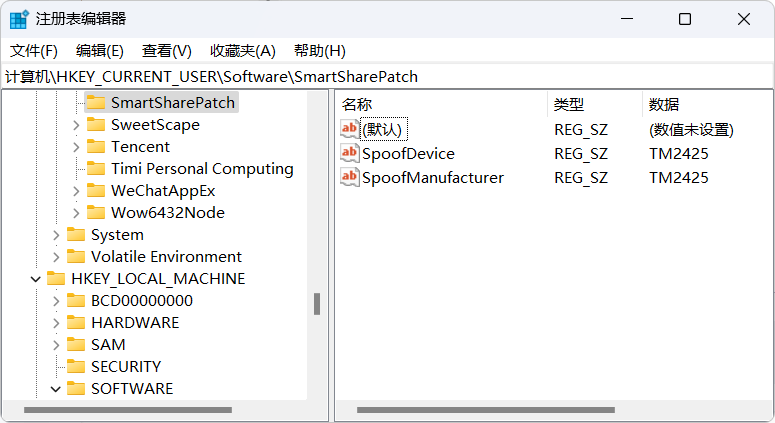
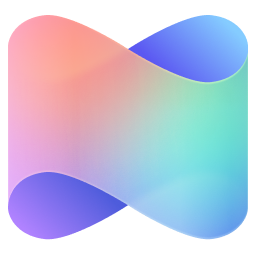
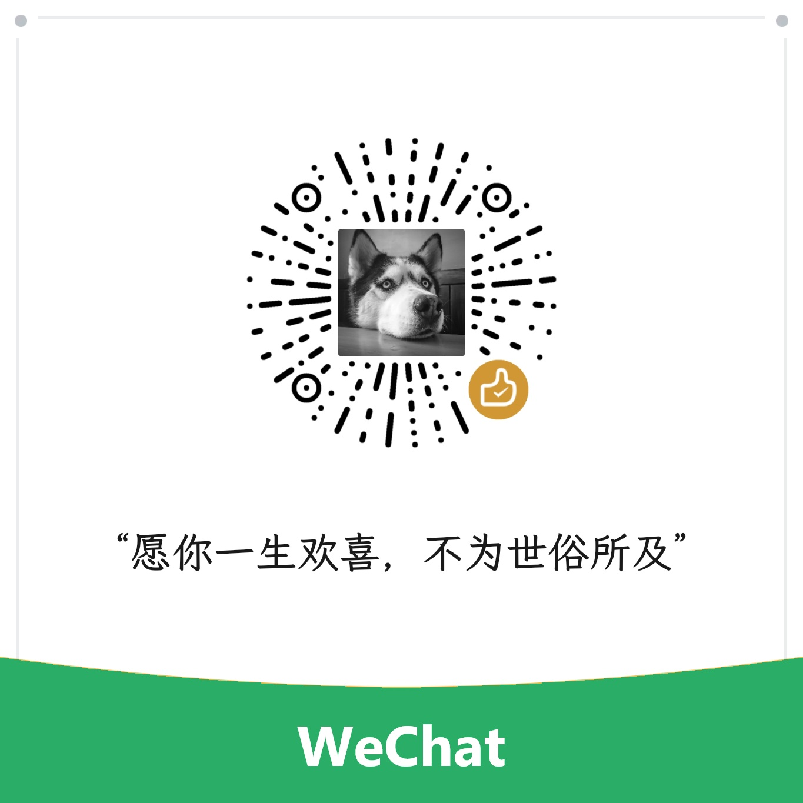

- 小米电脑管家若安装时仍出现 ⌜暂未支持本设备⌟ 的提示，请检查自己的电脑是否为 Arm架构 或者 x86架构 的设备，目前所有版本均只支持 Windows10 系统及以上版本的 x64架构 处理器设备
- wtsapi32.dll 无法正常安装连接可以试试将注册表 计算机\HKEY_CURRENT_USER\Software\SmartSharePatch 的 SpoofDevice 字符串值改为 TM2425 即 REDMI Book Pro 16 2026，同理 version.dll 和 msimg32.dll 添加自定义制造商伪装，见注册表 计算机\HKCU\Software\SmartSharePatch\SpoofManufacturer，更多机型请自行查询 https://www.mi.com/service/notebook/drivers
小米互联服务

小米电脑管家
小米妙享
MIUI+ Beta版
小米远程控制
小米应用商店
安装包及补丁
| 微信捐赠 | 支付宝捐赠 |
|---|---|
|
 |